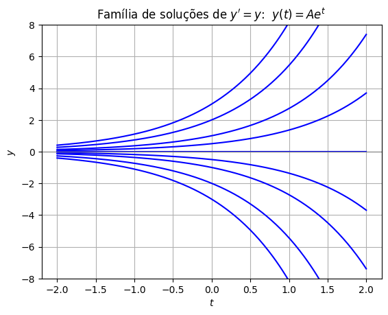
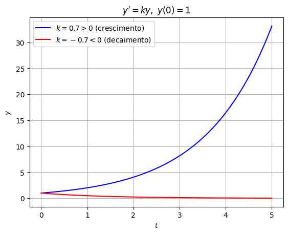

A equação diferencial fundamental \(y' = ky\)#
A equação diferencial mais simples — e, disparadamente, uma das mais importantes de todo o curso — é
onde \(k\) é uma constante. Ela faz uma pergunta muito natural: qual função \(y(t)\) é igual (ou um múltiplo constante) à sua própria derivada?
Adivinhando a solução#
Comece pelo caso mais simples, \(k=1\):
Qual função você conhece cuja derivada é ela mesma? Se você lembrar da tabela de derivadas do Cálculo 1, a resposta salta aos olhos:
Então \(y(t) = e^t\) é uma solução. E, como a derivada é linear, qualquer múltiplo \(y(t) = Ce^t\) também funciona:
Para a equação geral \(y' = ky\), um «chute» análogo é \(y(t) = Ce^{kt}\). Verificando por substituição direta:
Funciona! Mas essa estratégia de «adivinhar e verificar» depende de já conhecermos a resposta de antemão. E se não soubéssemos, de cor, a derivada de \(e^{kt}\)? Precisamos de um método sistemático.
Resolvendo de verdade: separação de variáveis#
A ideia da separação de variáveis é reescrever a equação de modo que tudo o que envolve \(y\) fique de um lado, e tudo que envolve \(t\) fique do outro — e então integrar os dois lados separadamente.
Escrevendo \(y' = dy/dt\), a equação \(y'=ky\) vira
Separando as variáveis (supondo \(y \neq 0\)):
Integrando os dois lados:
Aplicando a exponencial dos dois lados:
Como \(C_1\) é uma constante arbitrária, \(\pm e^{C_1}\) também é — só que agora pode ser qualquer constante não nula. Chamando essa constante de \(A\):
E o caso \(y=0\)? Ele ficou de fora quando dividimos por \(y\) — mas é fácil ver que a função constante \(y(t)\equiv 0\) também satisfaz \(y'=ky\) (afinal, \(0 = k\cdot 0\)). Ela corresponde exatamente ao valor \(A=0\). Juntando tudo, a solução geral é
A constante \(A\) e a condição inicial#
Assim como no Cálculo 1, a constante \(A\) representa uma família inteira de soluções — uma para cada valor de \(A\). Para escolher uma solução específica, precisamos de uma informação extra: o valor de \(y\) em algum instante. Fazendo \(t=0\):
Ou seja, neste exemplo \(A\) é simplesmente o valor inicial \(y_0 = y(0)\)! O problema de valor inicial
tem solução única
Abaixo, a família de soluções para \(k=1\) e diferentes valores de \(A\) (equivalentemente, de \(y_0\)):
import numpy as np
import matplotlib.pyplot as plt
t = np.linspace(-2, 2, 200)
for A in [-3, -2, -1, -0.5, 0, 0.5, 1, 2, 3]:
plt.plot(t, A*np.exp(t), 'b')
plt.axhline(0, color='0.5', linewidth=0.8)
plt.title(r"Família de soluções de $y' = y$: $\ y(t) = Ae^t$")
plt.xlabel("$t$"); plt.ylabel("$y$")
plt.ylim(-8, 8)
plt.grid(True)
plt.show()

O sinal de \(k\) decide tudo#
O comportamento da solução depende inteiramente do sinal de \(k\):
Se \(k>0\), \(e^{kt} \to \infty\) quando \(t\to\infty\): crescimento exponencial.
Se \(k<0\), \(e^{kt} \to 0\) quando \(t\to\infty\): decaimento exponencial.
Se \(k=0\), a solução é constante: \(y(t) = y_0\).
Compare as duas situações, ambas partindo do mesmo valor inicial \(y_0=1\):
t = np.linspace(0, 5, 200)
plt.plot(t, 1*np.exp(0.7*t), 'b', label=r"$k=0.7>0$ (crescimento)")
plt.plot(t, 1*np.exp(-0.7*t), 'r', label=r"$k=-0.7<0$ (decaimento)")
plt.title(r"$y' = ky,\ y(0)=1$")
plt.xlabel("$t$"); plt.ylabel("$y$")
plt.legend()
plt.grid(True)
plt.show()

Por que essa equação é tão importante?#
A equação \(y'=ky\) vai reaparecer sob diferentes disfarces ao longo de todo o curso: crescimento populacional, decaimento radioativo, juros compostos, resfriamento de um corpo, carga de um capacitor, entre muitos outros. Ela é, de fato, o ponto de partida de quase tudo que vem a seguir.